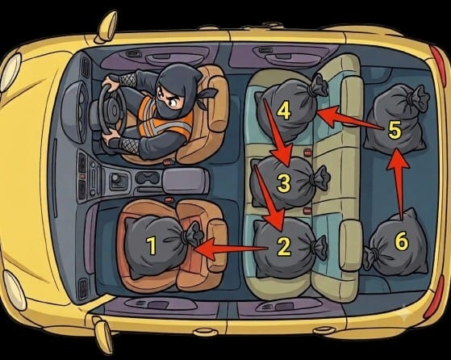

Subestimar a etapa de separação da carga gera um gargalo invisível: o tempo de calçada. Passar minutos caçando uma embalagem específica multiplica-se rapidamente e destrói o seu expediente.

A Lógica do Fatiamento
O aplicativo Rota Ninja foi desenhado com essa lógica. A Bag 1 contém as 10 primeiras paradas. A Bag 2 contém as paradas de 11 a 20, e assim por diante. Quando a Bag 1 esvaziar, basta puxar os itens da Bag 2 para o banco da frente. É um processo de recarga que leva 30 segundos.